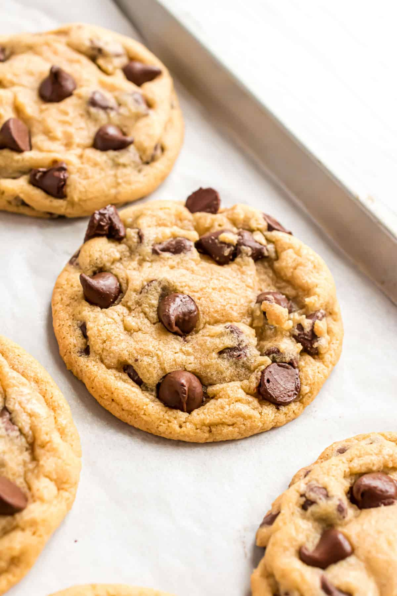

Chocolate Chip Cookies

Description
This is by far the best chocolate chip cookie recipe that I have every tried. Chewy on the inside and slightly crispy on the edges. The key to making the perfect cookie is the melted butter, brown sugar, and chilling the cookie dough before baking.
Ingredients
- All-purpose flour
- Baking soda
- Cornstarch
- Salt
- Butter, melted and cooled
- Dark brown sugar
- Granulated sugar
- 2 large eggs
- Vanilla extract
- Dark chocolate chips
Steps
- Whisk together the flour, baking soda, cornstarch, and salt.
- In a large bowl, beat together the cooled melted butter and all of the sugar with a hand mixer for about one minute. Then add in the eggs and vanilla extract. Beat until just combined.
- Slowly add the dry ingredients and mix briefly until no flour clumps are left. Fold in the chocolate chips.
- Refridgerate for about an hour.
- Preheat the oven to 350 F.
- Roll the cookie dough into balls and place onto a baking sheet. Bake for about 10-14 minutes.
- Let the cookies cool on the baking sheet for about 15 minutes before removing.